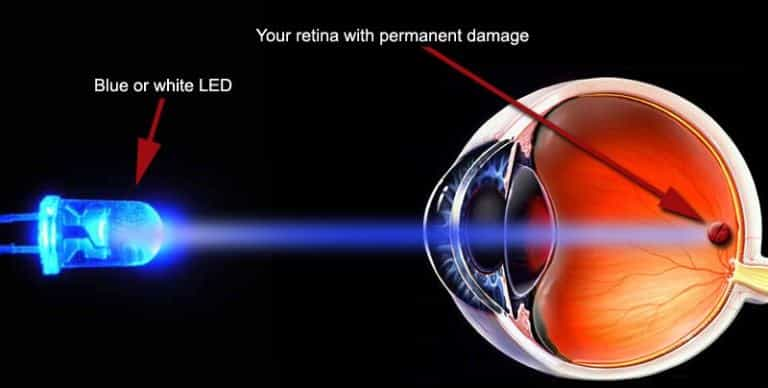

It is no surprise that the current world agenda seeks to destroy men from within but also from the outside at the same time. Only by attacking from all angles can their plans come to fruition. We do not know exactly when this attack started, but in recent years, it has become clear that the intensity of the current agenda’s intentions has increased tenfold.
Why are men targeted? Could it be the fact that by reducing the amount of true men with testes they reduce the chances that authentic revolutions against oppressive governments will happen? Any voice of reason against a corrupt society would swiftly be silenced. It happened 2,000 years ago (Jesus), and it is happening now more aggressively than it has ever happened in history.
Let’s see how men are being targeted for total destruction and implicitly and how to avoid these attacks…
1. Our Food Is Filled With Hormones, Antibiotics And Pesticides
Hormones are abundantly in beef, chicken or dairy products. We eat these daily, however, the hormones have an impact on a man’s health. Testosterone levels are lowered and estrogen levels increase. Manboobs, anyone?
Pesticides are well known chemicals that cause infertility and lower testosterone levels. Yet non-organic vegetables and fruits are abundant in life threatening toxins.
2. Cycling And Jogging
Doing physical activities is so beneficial that writing down all the benefits here would take forever. Yet there are a few physical activities which are unhealthy for the human body. Those kind of activities which have never been done by our ancestors.
For obvious reasons, cycling is unnatural because it uses an invented device. Constant pressure on the testes leads to infertility, reduces testosterone production and diseases.
Like cycling, jogging is an unnatural activity. Our ancestors would either walk or sprint, never jog. It is a useless activity. Jogging and cycling are activities which put continuous and constant stress on the body, leading to an overall decrease in testosterone over time. Do you think it is a coincidence that so much emphasis is being put on activities such as jogging and cycling?
3. Blue Light Bulbs

Blue light exposure has been linked to decreased testosterone levels. It is everywhere. Naturally occurring only in the morning when it helps the body wake up, nowadays we see it right until we close our eyes and go to bed. It is in our phone and computer screens, but most importantly, it is used to illuminate our rooms, bedside lamps and our offices.
Due to “environmental” reasons, it was decided that the classic incandescent bulb uses up too much energy, therefore it is better to use the new LED bulbs with carcinogenic gases.
You can’t run and you can’t hide. These blue-light bulbs are everywhere, creating anxiety and making us feel constantly tired. A tired mind is easy to control, and so is a low testosterone individual.
4. Our Drinking Water Is Filled With Female Hormones
Let me explain. The tap water that you drink also contains treated and cleaned water from our toilets, no mystery here. What we don’t know is that the hormones from a female’s period are flushed down with this same water. Chlorine does not remove hormones, it removes bacteria.
Drinking bottled water could be a solution, but then again, the plastic is also carcinogenic and also lowers our testosterone. Unless we have our own spring, we are fucked.
5. Sugar

Sugar reduces our metabolism to that of a sloth and promotes cancer. It also dramatically lowers our will to do anything meaningful with our lives. It takes down our testosterone due to our bodies prioritizing insulin production. It is addictive, more so than heroin, as proven on lab rats.
6. Aspartame

In an effort to soothe the minds of people concerned with sugar, they have created an even worst product called aspartame. Aspartame produces neurotoxins that excite our nerve cells so much that they die. However, our brain protects itself with a barrier from excess neurotoxins. If the barrier is passed, neurons are killed. The pituitary and pineal glands are also affected, leading to a disruption in our circadian natural rhythm.
Aspartame lowers testosterone and avid consumers would require a prolonged time for their testosterone to recover.
7. Veganism
Veganism is another new fad that keeps people excited about healthy lifestyles. What they don’t know is that this diet is aimed at reducing our aggressiveness and making us docile animals like say… sheep.
Go ahead and tame a lion. Obviously, veganism lowers testosterone and the lack of vitamins and nutrients, which I will explain in future articles, further leads to a pale and unforgiving future for our bodies and brains.
8. Soy
Soy has been part of the hype train of miraculous natural super foods for some decades now. Soy is an estrogenic food and guess what? It lowers your testosterone.
It should be simple by now: anything that is being promoted by the mainstream media should be considered false and damaging to our well-being.
9. The War On Fats
This is another worldwide mass deception promoted by the mainstream doctors and media. Fat is actually healthy and it helps reduce cholesterol due to the fact that if the body receives external cholesterol, then it does not need to produce it on its own, which would lead to the bad cholesterol in our blood.
Testosterone feeds on cholesterol. The higher amount of testosterone you will have, the lower your cholesterol will be. And the more external cholesterol you bring in, the more the testosterone can thrive and increase.
Eating fat meat will increase your health and improve your metabolism (unless you have some condition, in which case you should seek a doctor’s advice).
10. Coffee

Yes exactly, coffee. Caffeine is poison used by plants to protect themselves. Guess what happens when you ingest coffee every day?
Coffee depletes the adrenal glands responsible for regulating our hormones. Combined this with stress and we are sure to fall into an adrenal exhaustion. Testosterone is also one of those hormones, and when the adrenal glands become depleted, there is no way to produce any free or total testosterone within your body.
It takes three weeks to get rid of caffeine. Do you know why caffeine produces bowel movements? Because the body wants to get rid of the poison.
Conclusion
In case you are wondering what would be the best course of action to avoid exposure to factors that are detrimental to our health, the solution is as always simple: life should be lived the way it was meant to, in accordance with nature.
Read More: 5 Easy Ways To Boost Your Testosterone